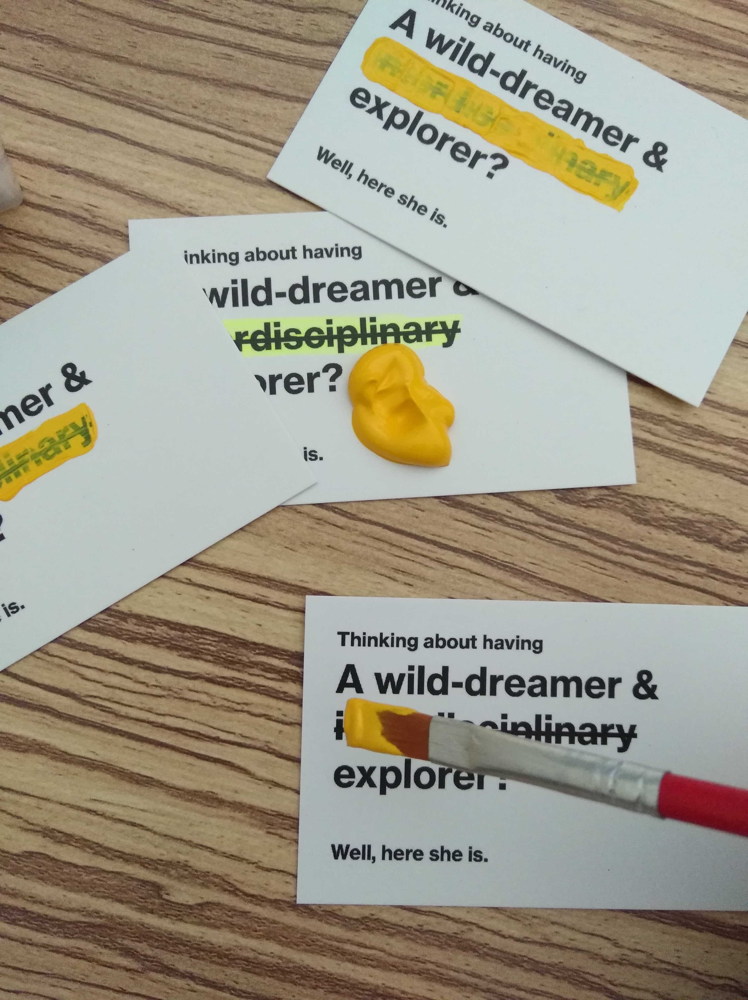

Mar. 2019
A whole new world...
Not very long ago, my resume, website, emails, and even LinkedIn were all started with “she”.
It was not because I am feminism or I want to emphasize about my gender.
It was simply because I am shy and I have a special name.
It is a personal choice to have an English name but many people encouraged me to think about it
- my name is quite hard for many people (and that is not my fault).
I understand that more opportunities might come when other people can easily pronounce
in their language.
But a random name does not make sense to me, so I used the initial characters of my name, “x” and “y”.
I repeated it once - otherwise, it is way too short.
The new name gave me the idea of building the whole concept of my brand. “x” and “y” makes a dot (x, y).
I see my self as a dot, and everyone/everything around is a dot. My passion is using design to build connections,
and my mission is using design to build meaningful connections. Yes, I am sure that I am gonna use this name now.
Besides “she” the word and the name, I also used striking lines to build my system. I like how it works
with my words, striking on the words for fun - people always pay attention to those jokes because of the form
(kind of match what I want - I am crazy about something fun).
So as you can see, I hid behind “she” and the striking lines for a long time. But since I decided to be
braver, it's time to make some changes. I turned “she” to “I” (It is so strange at the beginning but now I
already get used to it). I also turned the striking lines into highlights, so that I choose to jump out instead of hiding.
There is an important suggestion to tell if you have a similar idea of changing the system - I encourage you to do that as
early as possible. Because I decided to change after printing 200 name cards, and it took me a long time to turn in the new system.

The new system made me more confident about myself but that does not mean that I have no connection with the elements in the
old system. When Cally suggested me to have an actual pronunciation of my name, I choose the one that was first called by Elliott,
“she-she”.
Something more:
I also changed my system of DBGH this time. I redesigned and challenged myself to code on my own. The change in this system
took me a much longer time (and I hope you like it).
<-Before
Menu